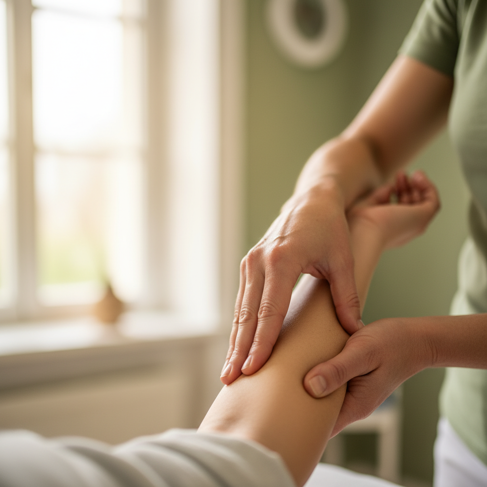

Stephan Suhl
Naturheilkundler, Physio- & Chirotherapeut, Coach
Als erfahrener Naturheilkundler und Therapeut bringt Stephan Suhl ein breites Spektrum an Wissen und Techniken mit. Seine Expertise liegt in der ganzheitlichen Diagnostik und der Entwicklung individueller Therapiepläne. Er begleitet Sie mit Empathie und Fachkenntnis.